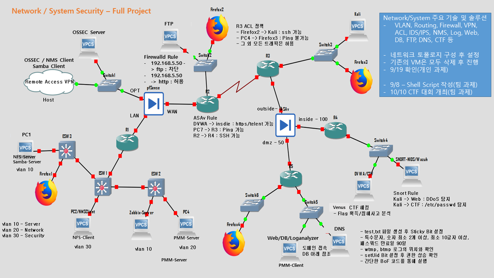
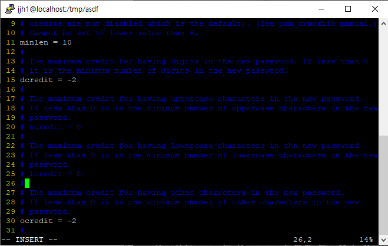
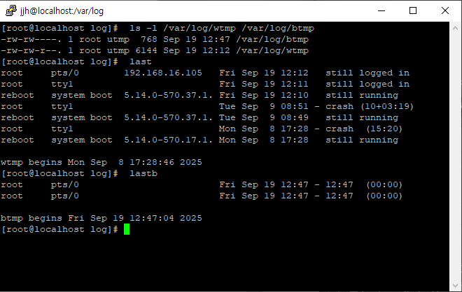

네트워크 , 시스템 보안
프로젝트 설명
Cisco-Asav 방화벽 설정을 통해 Security-Level에 따른 정책설정을 통해 트래픽을 허용해 주는 것을 수행했습니다.
방화벽 설정 예시 : access-list 100 extended permit tcp host 192.168.40.1 host 192.168.50.2 eq telnet
Pfsense 설정을 통해 Open-VPN 설정도 수행했습니다.
Snort 및 Security Onion 등 다양한 도구를 활용하여 특정 주소에서 HTTP나 ICMP를 탐지하고, 다양한 해킹 기법에 대한 탐지를 수행했습니다.
Snort 대표 룰 예시 : alert tcp 192.168.16.105 -> 192.168.16.188 80 (msg:"Incoming HTTP"; sid:100007; rev:1;)
사용 기술 스택
- Ubuntu
- Rocky Linux
- Set Uid
- Buffer Overflow
- Snort
- Cisco ASAv

이미지를 클릭하면 확대됩니다.

Sticky Bit 설정

Password 복잡도 설정

PW 만료 기간 설정

wtmp/btmp 로그 확인

SetUID 권한 상승 실습

Buffer Overflow (BOF)
여기에 네트워크 보안 관련 이미지나 설명을 추가할 수 있습니다.